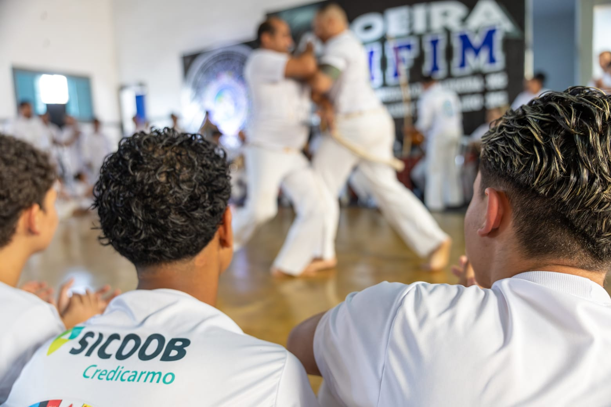
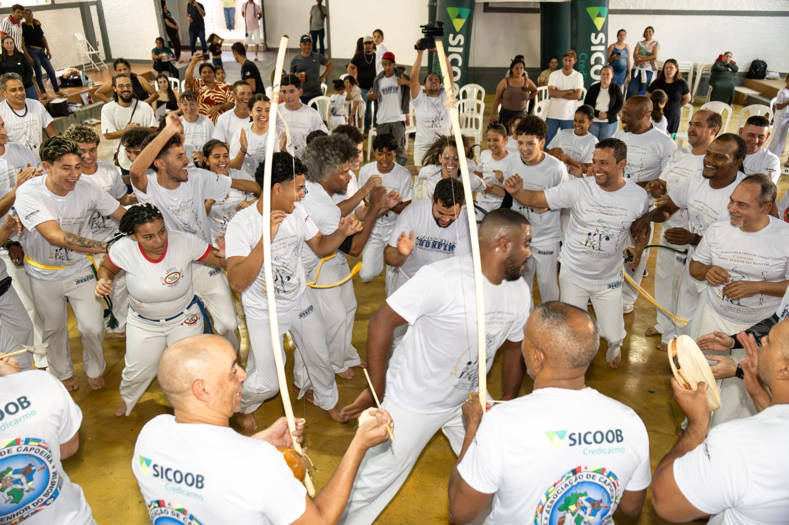
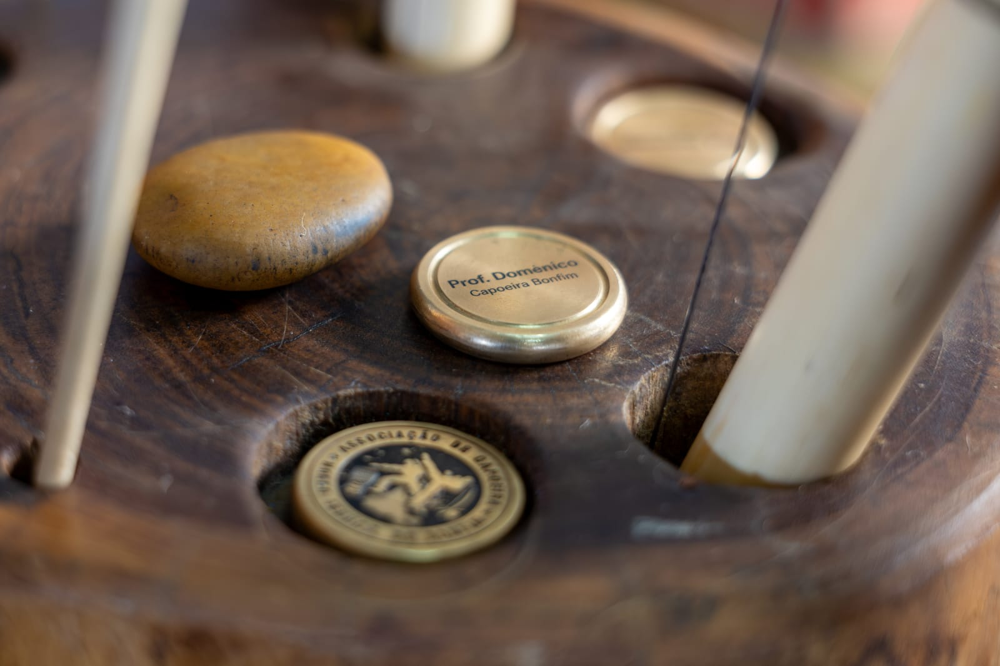
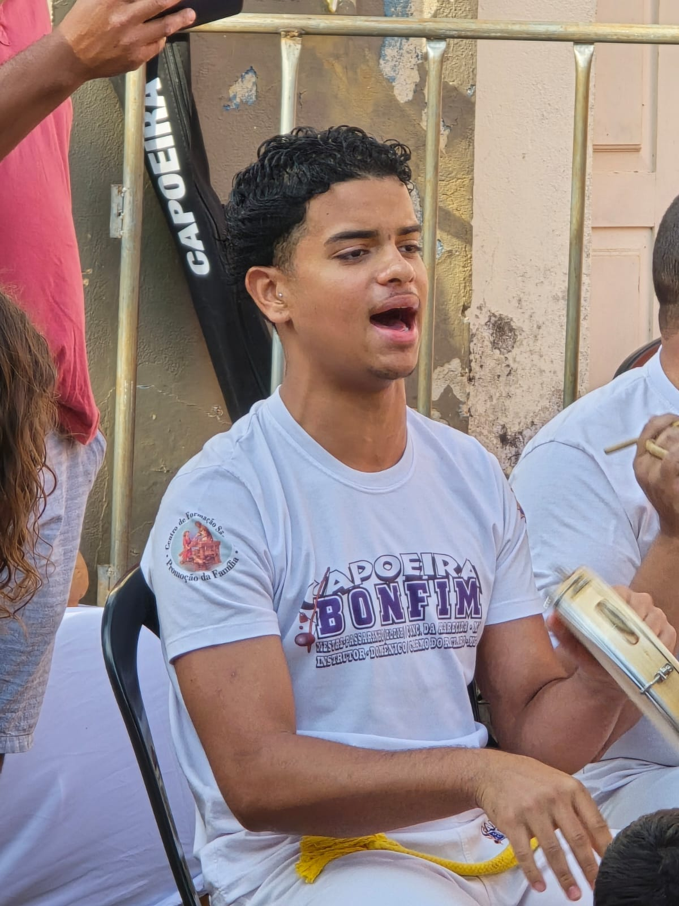
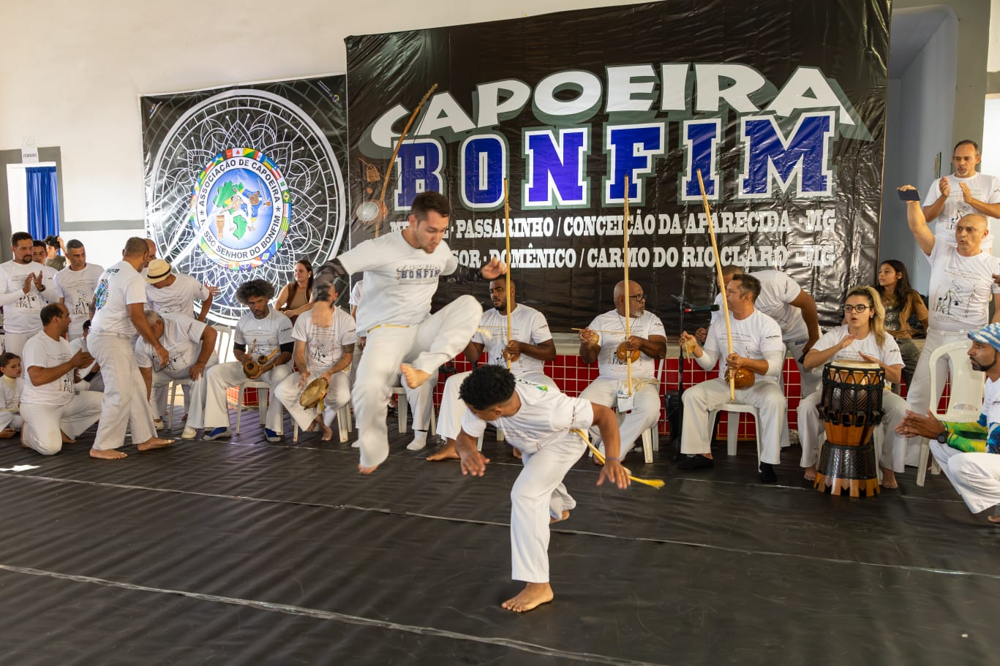
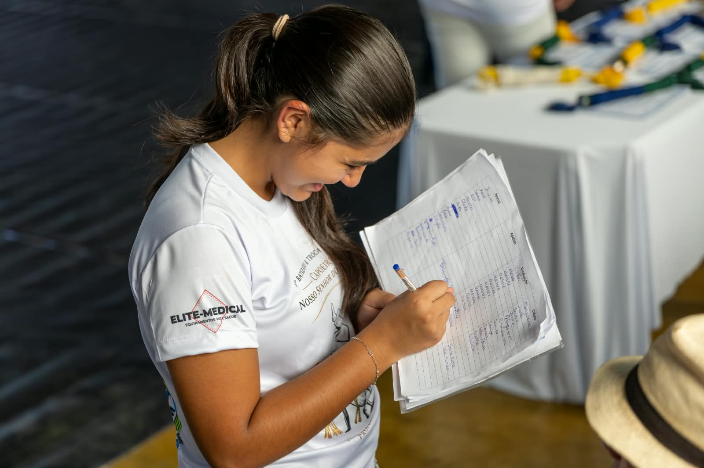
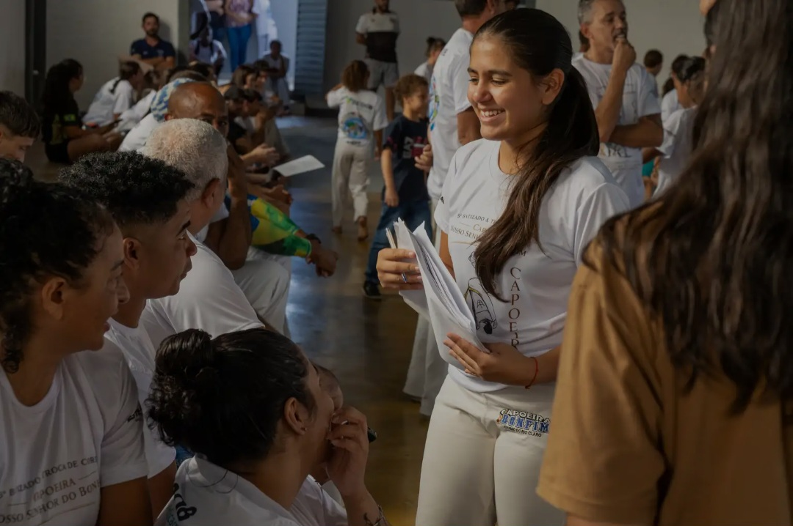
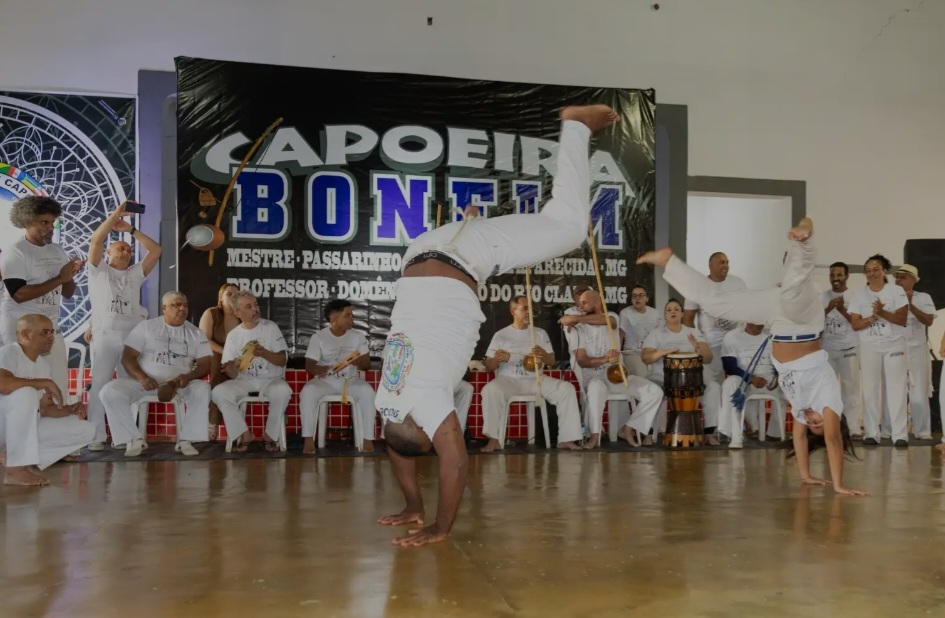

Aprendizado
Cada treino oferece uma oportunidade de aprender novos movimentos, melhorar a coordenação e crescer com a orientação dos professores.
Uma arte que reúne movimento, musicalidade, respeito e a força da cultura brasileira. Cada roda é um encontro de aprendizado, história e comunidade.
Conheça nossa históriaHomenagem aos professoresO Grupo de Capoeira Nosso Senhor do Bonfim carrega em seu nome uma tradição que vai muito além dos movimentos do jogo. A capoeira é uma expressão cultural brasileira formada pela união de luta, dança, música, brincadeira, estratégia e memória. Dentro da roda, cada pessoa aprende a observar, escutar o ritmo, respeitar o parceiro e compreender que o jogo se constrói em conjunto.
A história de um grupo de capoeira não é feita apenas de datas. Ela também vive nos treinos semanais, nas primeiras gingas de quem está começando, nas cantigas aprendidas aos poucos, nos instrumentos compartilhados e nos conselhos passados pelos mais experientes. Cada aluno que entra na roda acrescenta uma nova parte a essa caminhada.
Os batizados e as trocas de cordas representam momentos especiais dessa trajetória. São oportunidades para celebrar o esforço dos alunos, reconhecer a evolução de cada um e renovar o compromisso com o aprendizado. Mais do que receber uma corda, o capoeirista é lembrado de que continuar aprendendo exige humildade, disciplina e respeito.
A musicalidade é parte essencial dessa identidade. O berimbau conduz o ritmo, enquanto pandeiro, atabaque, palmas e cantigas aproximam os participantes e ajudam a manter viva a tradição. Aprender capoeira também é conhecer os fundamentos, escutar os mais velhos e entender o significado cultural por trás de cada toque e cada canto.
O grupo também se fortalece nos encontros, apresentações e eventos que aproximam alunos, famílias e comunidade. Esses momentos mostram que a capoeira pode abrir espaço para amizade, expressão corporal, confiança, cooperação e valorização da cultura afro-brasileira.
Essa história continua sendo escrita por todos que participam: professores, graduados, alunos, familiares e amigos. Cada treino, roda e evento é uma oportunidade de transmitir conhecimentos, cultivar bons valores e manter a capoeira presente nas próximas gerações.

Uma prática que desenvolve o corpo, a atenção, a musicalidade e a convivência.

Cada treino oferece uma oportunidade de aprender novos movimentos, melhorar a coordenação e crescer com a orientação dos professores.

Os instrumentos, os ritmos e as cantigas ajudam a contar histórias e a preservar a riqueza cultural da capoeira.

Na roda, todos têm um papel: jogar, cantar, tocar, bater palmas, observar e incentivar os colegas.
Princípios que ajudam a construir um ambiente de respeito, amizade e desenvolvimento.
Valorizar professores, colegas, tradições e os limites de cada parceiro.
Ter dedicação para treinar, paciência para aprender e humildade para evoluir.
Compartilhar conhecimentos, acolher quem está começando e celebrar as conquistas em conjunto.
As fotos abaixo foram enviadas para este site e mostram momentos de roda, evento, instrumentos e participação dos capoeiristas.

Três registros que revelam diferentes lados da capoeira: o cuidado com os preparativos, o encontro entre pessoas e a energia do jogo.

Antes e durante os momentos de celebração, existem pessoas atentas a cada detalhe. Nesta fotografia, vemos o trabalho de organização e o compromisso de quem ajuda a fazer o evento acontecer. A capoeira também se fortalece nesse cuidado silencioso.

Entre conversas, sorrisos e atenção aos participantes, aparece uma parte muito especial da nossa trajetória: a união. Mais do que compartilhar movimentos, a comunidade da capoeira se constrói nos vínculos, na acolhida e no respeito mútuo.

Na roda, cada gesto ganha significado. Os movimentos dos capoeiristas, acompanhados pelos olhares e pela presença dos demais, mostram a expressão dessa arte brasileira. É um instante de técnica, confiança, celebração e memória coletiva.
Além da homenagem especial ao Professor Domenico e à Graduada Lucy, reunimos mensagens de carinho escritas por quem faz parte dessa caminhada.
Conhecer agradecimentos dos alunosUm agradecimento especial por todo esforço, comprometimento e dedicação ao longo de 5 anos de caminhada.